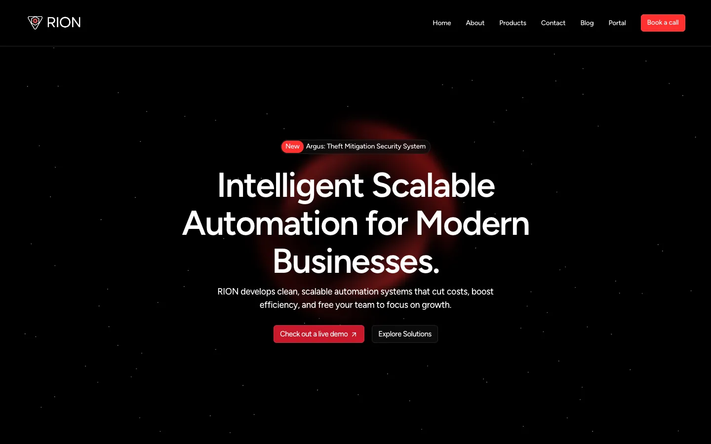
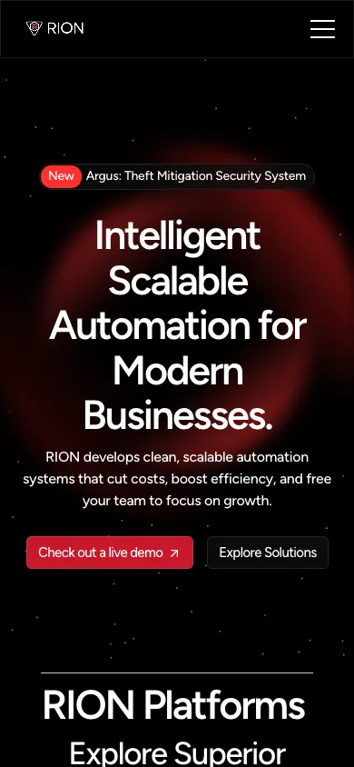

Automation engineer
RION Solutions
An AI automation agency, and the parent company of Argus.
- rionsolution.com
- Private repo
Small businesses lose time to repeat work.
RION sells automation to businesses that do the same steps by hand every day: typing a new client into three systems, looking up the same county record again, shipping a change by running commands one at a time.
Each of those costs hours, and each makes errors that cost more hours to find.
Automate the repeat work, then keep it running.
RION builds clean automation systems and AI builds for its clients, and sells three products on top: FORGE for custom AI builds, ARGUS for security and monitoring, and NEXUS, a client portal.
I worked as an automation engineer. I took the repeat work in front of me, such as intake, county lookups and deploys, and turned it into services that run on their own.
How the work fit together
Four pieces carried most of my time. Client intake ran end to end with no hand entry. The services behind it ran on Python, Flask and AWS Lambda. A Docker and GitHub Actions pipeline shipped changes. And one API sat in front of three county record systems.
What it reached
- 70%faster client onboarding
- 10K+AWS transactions a day
- 40%faster deploys
- 1K+county lookups a day
- 95%on-time delivery
- 8+client deployments
What I owned
- Automated client intake end to end. Onboarding got 70% faster and duplicate entries stopped.
- Kept 10K+ AWS transactions a day running.
- Made deploys 40% faster with Docker and GitHub Actions.
- Put 3 county record systems behind one API, with caching for 1K+ lookups a day.
- Delivered 95% on time across 8+ client deployments.
What I learned
Most of the value in automation is in the boring middle: duplicate records, retries, and a deploy that does not need a person watching it.
Delivering for clients means the schedule is part of the product. Shipping 95% on time came from small, repeatable deploys.
The live site

rionsolution.com, captured in November 2026. 
The products section: FORGE, ARGUS and NEXUS. 
The home page on a 390 pixel phone.